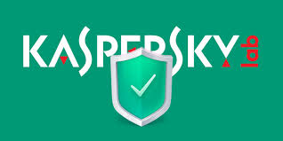
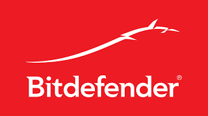
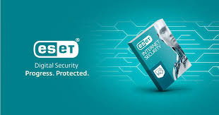

Касперский
Касперский — это один из лучших антивирусов, предлагающий защиту от всех типов угроз, включая вирусы, шпионские программы, трояны и многое другое.
 СкачатьAvast
Avast предлагает надежную защиту от вирусов, шпионских программ, а также дополнительные функции для защиты конфиденциальности и паролей.
СкачатьBitdefender
Bitdefender — это антивирус с передовыми технологиями защиты от вредоносных программ, обеспечивающий высокий уровень безопасности для вашего устройства.
 СкачатьESET NOD32
ESET, s r.o. — компания — разработчик антивирусного программного обеспечения и решений в области компьютерной безопасности для корпоративных и домашних пользователей, основанная в 1992 году. Штаб-квартира ESET находится в Братиславе. Скачать база обновление продуктов ESET NOD32
 Скачать